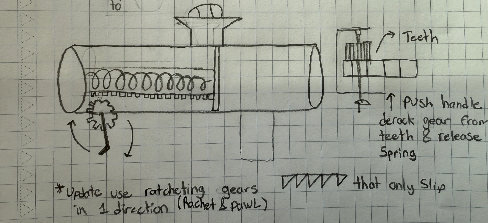

Design Process
We began by brainstorming mechanisms capable of launching a ball roughly 7.5 m. My first personal concept was a spring-based design where the user pulled back a string handle — minimal moving parts, mountable in a wheelchair cup holder.
My second concept introduced a rack-and-pinion system with a hand crank to wind a spring, and ratcheting gears to hold tension without requiring constant force from the user. The ratchet-and-pawl mechanism was key — Mark wouldn't need to strain to maintain compression.
As a team we converged on a pull-back spring mechanism, which I developed into a CAD model featuring 3D-printed springs slotted into attachment points on both ends. A half-scale model was printed to rapidly validate the mechanism before committing to full-scale fabrication.

